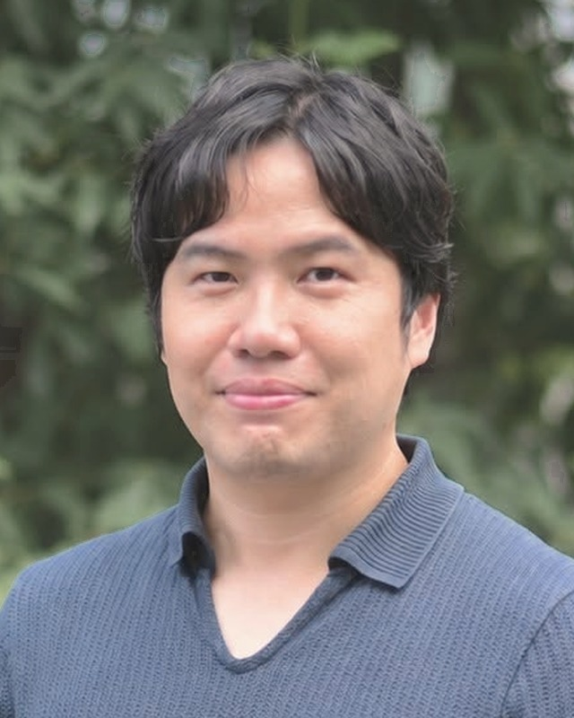

Portfolio — XR / Digital Twin / Generative AI
株式会社Play Life Studio 代表取締役CEO
XR・デジタルツイン・生成AIを、産業と行政の現場へ。

領域を越えて、つくる。
ゲームから研究へ、研究からプラットフォームへ、そして起業と行政へ。ひとつの領域に深く潜り、つかんだものを隣の領域へ持って渡ってきました。
領域を選ぶと、その領域の取り組みと記事が浮かびます
越境とは、混ぜることではなく、新しい意味を生み出すこと。
視点を重ねると、それまで見えなかった問いと価値が立ち上がる。大学で専攻の壁が消えた日から、ずっとそうやって領域を渡ってきた。
「やらされる」を、「やりたい」に変える。
食事も忘れてゲームに没頭した高校時代に知った。人は、仕組みしだいで夢中になれる。学び方が合わなければ、人は「できない人」に見える。ただそれだけのことだ。だから現場の学びや仕事を、遊びの仕組みで設計し直す。
価値は、自分で創る。
「選択と集中」「君の役割はこれだから」と言われ続けても、好奇心のほうを信じてきた。決められた意味がないなら、つくればいい。
一度きりの人生を、ゲームのように。
社会人2年目、大企業も守ってはくれないと知った。成長は自分で設計するしかない。だから人生を自分でプレイする。
今に向き合い、今に夢中になる。
横断歩道の白いところだけを渡る子どもは、先のことを考えず、目の前の一歩に集中している。本当の幸せは、そうやって今に向き合い、今の楽しさに没頭することだと思う。
技術の言葉を、相手の言葉に。
技術は特別な人だけのものではない。エンジニアは課題と解決のあいだをつなぐ翻訳者だと思っている。
誰かが作るのを待たず、自分が作れるかもしれないと考える。
好奇心に責任を持つこと。それが、産業と行政の現場に技術を置き続ける理由。
XR・AIの研修コンテンツをつくる制作プラットフォーム。専門知識がなくても、現場のシナリオを組める。
産業現場の導入・オンボーディング。外国人材が現場で早く戦力になり、定着するまでを支える。
AIアバターが話す、研修・解説動画をつくるスタジオ。
家族で取り組む、習慣化のアプリ。家族それぞれがアバターを持ち、小さな街で一緒に成長を楽しむ。
国土交通省の3D都市モデルをUnityで扱えるようにする、オープンソースのツールキット。
県土整備部で、BIM/CIM・ICT施工の現場普及と職員研修を支援。
絵本の読み聞かせに会話エージェントを組み合わせ、子どもとの対話を引き出す。
つくったものを、問いとして確かめる。VRと触覚の研究から始まり、いまは会話エージェントと子どもの対話を研究しています。
高校時代はオンラインゲームに没頭し、学校にもろくに行かなかった。そこで世界中の仲間と、自分の意志で何にでもなれる感覚を手に入れた。
ゲームプログラマー、エンジニア、研究ディレクター、プラットフォームの仕事を経て起業。部門がなくなったことも、共同創業者が去ったこともある。そのたびに、得たものを持って次の領域へ渡ってきた。
これまでの物語を読む →